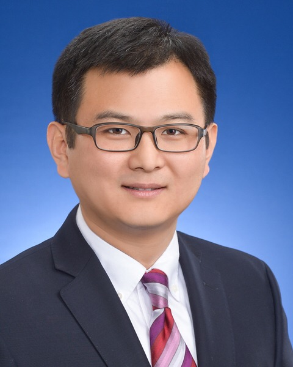

PharmKDD: Knowledge Discovery and Data Mining for Pharmaceutical Research and Development
A KDD 2025 Workshop
DescriptionPharmaceutical research and development (PRD) refers to the process of discovering and developing medicines and treatments. It is an expensive ($1-2.6 billion on average) and time consuming (10-15 years on average) process. Despite the time and monetary investments, historical data shows that the success rate of a new drug from discovery to final approval from the Food and Drug Administration is only around 10%. This fact highlights the urgent need for innovative methods to improve the efficiency and success rate of the PRD process.
There are many steps in the PRD pipeline, which includes target identification, molecule design and synthesis, pre-clinical development, human clinical trials, and post-marketing surveillance. Over the years, large volumes of data have been accumulated from these different steps, which encode evidence and insights of the PRD process. This provides an unprecedented opportunity for developing effective data mining and knowledge discovery (KDD) methods to extract insights from those data to improve the PRD process. Furthermore, advances in deep phenotyping using AI have greatly expanded the disease landscape, capturing a richer spectrum of disease attributes and patient subtypes, which in turn elevates drug discovery efforts by refining target identification and validation—effectively transforming the other side of the therapeutic equation into a more precise, data-driven realm of innovation.
There are lots of examples of recent research developing KDD methods for PRD. However, the existing research has been mostly isolated into different communities focusing on a particular intermediate step, while we cannot have any of these steps fail in order to successfully develop a drug. Therefore, there is an urgent need for a forum to bring together researchers and practitioners from both academia and industry working on different aspects of KDD for PRD, discuss the state-of-the-art research and technologies, and chart the future agenda.
Organizers
 |
Fei Wang is currently a tenured Professor of Health Informatics in Department of Population Health Sciences at Weill Cornell Medicine (WCM), where he also holds a secondary appointment as a Professor in Department of Emergency Medicine. Dr. Wang is the Founding Director of the WCM Institute of AI for Digital Health (AIDH) and an Adjunct Scientist at Hospital for Special Surgery (HSS). His research interest is machine learning and artificial intelligence in biomedicine. Dr. Wang has published over 350 papers on the major venues of AI and biomedicine, which have received more than 35K citations to date. His H-index is 86. Dr. Wang is an elected fellow of American Medical Informatics Association (AMIA), American College of Medical Informatics (ACMI) and International Academy of Health Sciences and Informatics (IAHSI), and a distinguished member of Association for Computing Machinery (ACM). |
|---|---|
| Jian Tang is currently an associate professor at Mila - Quebec AI Institute, the leading AI Institute in Canada founded by A.M. Turing Award laureate Yoshua Bengio. He is a Canada CIFAR AI Research Chair. Dr. Tang is also the founder and CEO of BioGeometry, an AI startup focusing on protein design, with application in antibody and enzyme design in synthetic biology. His main research interests are deep generative models, graph neural networks, geometric deep learning, and their applications drug discovery. His work LINE on node representation learning has been widely recognized and has been cited more than 6,000 times. He has also done many pioneering work on AI for drug discovery including the first machine learning framework for drug discovery, TorchDrug and TorchProtein. He was the recipient of the best paper award at ICML and nominated for the best paper award at WWW. He serves as area chairs in NeurIPS, ICML, AAAI etc, and is an action editor of JMLR. | |
|  | Jie Shen is a Research Fellow and Director of Digital Science at AbbVie, where he spearheads the integration of digital health technologies and advanced data analytics in clinical development. With a strong commitment to accelerating drug development through innovative technologies and analytics, including AI and ML, Dr. Shen brings a wealth of experience and a passion for transformative solutions in healthcare. Before his recent roles at AbbVie, Dr. Shen holds several roles within Eli Lilly and Company and the US FDA, driving AI applications in drug discovery and development. Dr. Shen is a key developer of Lilly’s internal deep learning tools for drug ADMET properties predictions and FDA estrogenic activity database. He has published 50+ papers with over 8,000 citations. |
| Ying Li is a Director of Health Economics and Outcomes Research at Regeneron Pharmaceuticals, Inc. With over 15 years of experience in medical informatics research, Dr. Li specializes in extracting, integrating, and transforming both structured and unstructured data into actionable insights to address critical healthcare challenges. After earning her PhD in Biomedical Informatics from Columbia University, Dr. Li spent five years at IBM Research as a Research Staff Member in the Center for Computational Health, where she led the development of the Watson for Patient Safety research prototype. In recent years, her work has focused on leveraging real-world data and AI techniques to meet diverse business needs across the drug development lifecycle. Dr. Li has authored 20+ peer-reviewed publications in top-tier, cross-disciplinary journals such as Nature Biotechnology, Diabetes Care, Movement Disorders, Nature Scientific Reports, JAMIA, and TKDE, as well as presented at leading conferences including AMIA and AAAI. She is also the inventor of four patents. | |
| Benjamin Glicksberg is an Associate Professor at the Icahn School of Medicine at Mount Sinai in the Department of AI and Human Health. He holds secondary appointments in the Hasso Plattner Institute for Digital Health at Mount Sinai and the Mindich Child Health and Development Institute. Dr. Glicksberg’s research interests broadly span machine learning in health, focusing on translating multi-modal and multi-omic models into clinical practice. He has published over 185 papers in biomedical AI-related journals culminating in over 17K citations to date. Prior to this role, he served on the leadership team at Character Biosciences. As VP and Head of Data Science and Machine Learning, he led efforts analyzing patient clinical and genomic data from observational trials to create digital biomarkers of disease progression. These biomarkers, integrated with genomic data, helped identify novel drug targets soon to be entering human clinical trials. |
| Jianying Hu is IBM Fellow and Global Science Leader, AI for Health and Director of HCLS Research at IBM. She is also an Adjunct Professor at Icahn School of Medicine at Mount Sinai. She has conducted and led extensive research in machine learning, data mining, statistical pattern recognition, and signal processing, with applications to healthcare analytics and medical informatics, business analytics, and multimedia content analysis, with recent efforts focusing on developing AI technologies for accelerated discovery of therapeutics. Dr. Hu is a fellow of the American College of Medical Informatics (ACMI), International Academy of Health Sciences Informatics (IAHSI), IEEE, and the International Association of Pattern Recognition (IAPR). She received the Asian American Engineer of the Year Award in 2013. | |
| Rinol Alaj is a Senior Director and Head of Clinical Outcomes Assessment and Patient Innovation at Regeneron Pharmaceuticals, Inc. Rinol’s professional focus is centered around integrated Innovation, design thinking, digital endpoint, and clinical operation with 15 years of experience in startup and pharma industry. Savvy, results-oriented leader with proven success in transforming and building eCOA organizations from the ground up. . | |
| Zhiyong Lun is Senior Investigator with tenure at the NIH Intramural Research Program, leading research in artificial intelligence (AI), machine leaning, biomedical text and image processing, and information retrieval. In his role as Deputy Director for Literature Search at National Center of Biotechnology Information (NCBI), Dr. Lu oversees the overall R&D efforts to improve literature search and information access in resources like PubMed and LitCovid that are used by millions worldwide on a daily basis. Additionally, Dr. Lu holds an Adjunct Professor position with the Department of Computer Science at the University of Illinois Urbana-Champaign (UIUC). | |
| Xia Ning received her Ph.D degree from the Computer Science and Engineering Department, University of Minnesota, Twin Cities, in 2012. From University of Minnesota, Twin Cities, she also received her M.S. degree in Computer Science, and M.S. degree in Statistics from the School of Statistics. She received her B.S. degree in Computer Science from the Chu Kechen Honors College (an elite college), Zhejiang University, China. She was a researcher at the Autonomic Management Department, NEC Labs America in 2012-2014, and a tenure-track Assistant Professor at the Computer and Information Science Department (a Purdue Ph.D. program), Indiana University – Purdue University Indianapolis (IUPUI) in 2014-2018. At IUPUI, Ning was also a member of the Center of Computational Biology and Bioinformatics (CCBB) and an affiliated research scientist with Regenstrief Institute. Ning joined The OSU as a tenure-track Assistant Professor in July, 2018. | |
- 8-8:45am: Keynote Talk: Jianying Hu
- 8:45-9:30am: Keynote Talk: Rinol Alaj
- 9:30-10:00am: Coffee Break
- 9:30-10:45am: Keynote Talk: Zhiyong Lu
- 10:45-11:30am: Keynote Talk: Xia Ning
- 11:30-11:40am: Paper Presentation: Unraveling Text Prompts into Molecules: Latent Chain-of-Generation
- 11:40-11:50am: Paper Presentation: TrialGenie: Empowering Clinical Trial Design with Agentic Intelligence and Real World Data
- 11:50-12:00am: Paper Presentation: MolTIF: A Molecular Transformer for Interpretable Fragment-level Representation Learning
Timeline
- Paper Submission: May 8th, 2025.
- Paper Notification: June 8th, 2025.
© Fei Wang